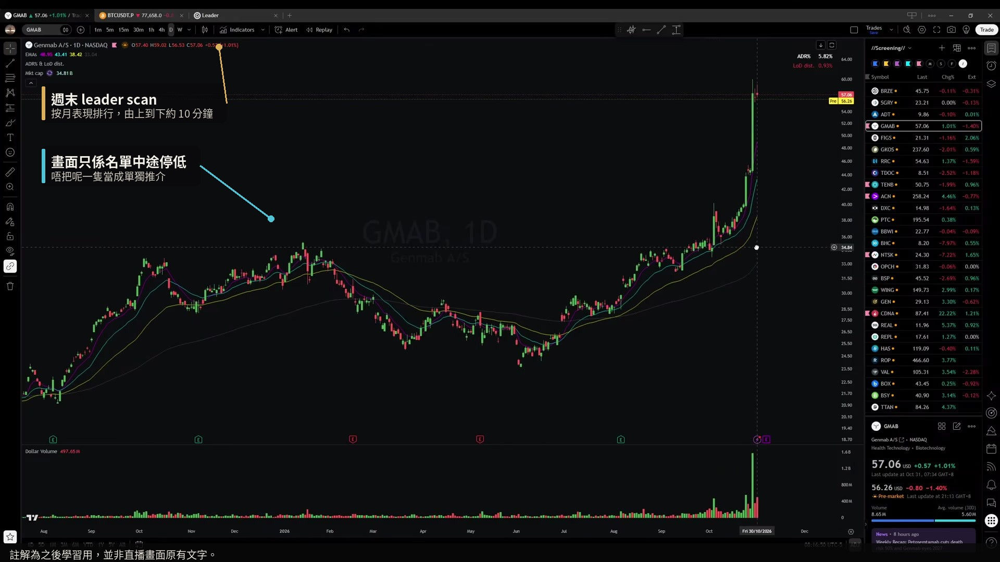
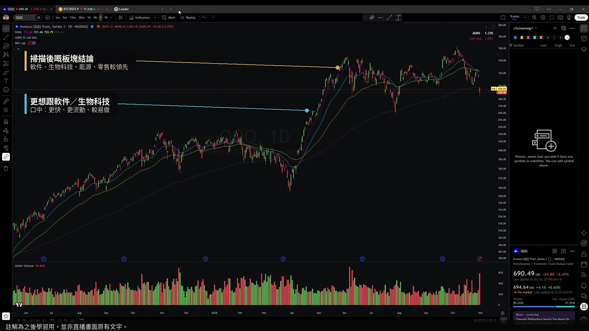

概要
先用週末掃描，再講而家邊啲板塊較領先
05:08 開始，佢話每個週末都會做 leader scan：按月表現排行，睇有冇喺日線掃描錯過嘅領袖，亦想感受而家市場邊啲嘢行得通。跟住大約 05:57 至 13:54 幾乎冇對白，畫面喺名單裡快速翻圖，本站唔會把呢段做成圖冊。14:04 起先再講結論：軟件、生物科技、能源同零售係而家較領先嘅板塊；佢更想把重點放喺軟件或者生物科技，因為更快、更流動、較易做。
05:10 畫面停在名單中途嘅一隻股票，只係掃描過程，唔當成單獨推介。
圖一 · 過程
週末 leader scan：按月表現排行
直播 05:10

原話
Maybe let's start with the leader scan first. So I will run the leader scan on every weekend. So trying to rank the stocks by the monthly performance and to see whether I somehow missed some of the leaders in the daily scans and also get a feeling of what's working in the market right now.
或者先由 leader scan 開始。我每個週末都會做呢個掃描。想按月表現排行，睇下有冇喺日線掃描錯過一啲領袖，亦想感受而家市場邊啲嘢行得通。
點樣讀
呢一步係方法，唔係即場揀股。排行、由上到下掃一輪，係為咗補日線掃描同判斷板塊氣氛。
05:10 停低嘅嗰隻，只係掃描中途嘅畫面，下面結論先係佢講出嚟嘅板塊觀察。
圖二 · 結論
掃描後：領先板塊同佢更想跟嘅方向
直播 14:10

原話
Like every week I will go through the whole list of the leaders, going from the top to the bottom. So I spent around like 10 minutes going through all of them and I think from this, from the scans, I see like softwares, biotechs, some energy stocks and some retail stocks. I think they are the leading sector right now. And to me I would like to put more focus on especially the softwares or maybe some biotechs, as they're like faster, they move faster, and more liquid, easier to trade.
每個星期我都會由上到下把成份領袖名單行一次。大約花 10 分鐘睇晒。今次掃描我見到軟件、生物科技、一啲能源股同零售股，覺得佢哋係而家較領先嘅板塊。對我嚟講，更想把重點放喺軟件，或者一啲生物科技，因為佢哋更快、更流動、較易做。
點樣讀
結論係板塊層面：領先嘅係軟件、生物科技、能源同零售。佢主觀上更想跟速度快、流動性高嘅軟件同生物科技。
中間約八分鐘靜音翻圖，唔會逐隻列。呢幅 QQQ 只係講結論時嘅背景圖，唔等於佢喺分析 QQQ 形態。
附註
注意事項
- 05:57 至 13:54 幾乎冇對白，只係沿名單翻圖，本站唔做成圖冊。
- 畫面睇唔到成交價、倉位大細或者損益，所以唔寫死呢啲數字。